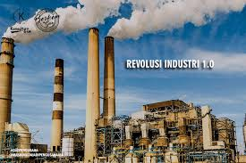

Revolusi Industri 1.0
 (gambar di ambil dari google)
Revolusi Industri 1.0 terjadi pada abad ke-18 hingga pertengahan abad ke-19. Periode ini ditandai dengan penemuan mesin uap yang digunakan dalam proses produksi barang. Revolusi ini membawa perubahan besar di bidang pertanian, manufaktur, pertambangan, transportasi, dan teknologi, serta berdampak pada kondisi sosial, ekonomi, dan budaya di dunia.
.jpg) (gambar di ambil dari google)
(gambar di ambil dari google).jpg) (gambar di ambil dari google)
(gambar di ambil dari google)